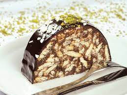

---------- | Mozaik Pasta | -----------
Mozaik Pasta Tarifi Nasıl Yapılır?

Mozaik pasta için öncelikle bisküvileri kırıyoruz, kırarken de fazla ufalamamaya dikkat ediyoruz.
Margarin veya tereyağını bir tavada eritiyoruz.
Eriyen yağı, sütü, şekeri ve kakaoyu bir kabın içerisinde güzelce karıştırıyoruz.
Elde ettiğimiz karışımı, kırmış olduğumuz bisküvilerin üzerine döküyoruz veya tam tersi bisküvileri bu karışımın içine ekleyebilirsiniz. Bu aşamada isteğe göre ceviz, fındık veya Antep fıstığı da ilave edebilirsiniz.
Daha sonra bisküvileri ezmemeye özen göstererek, iyice karıştırıyoruz.
Karışımı streç folyo arasına alarak, elimizle rulo şeklini veriyoruz veya uzun ince kabınız varsa onun içine de yerleştirebilirsiniz daha düzgün şekilli oluyor.
Servis etmeden önce, buzlukta 2-3 saat kadar dinlenmeye bırakıyoruz.
Daha sonra dilimleyerek servis ediyoruz.